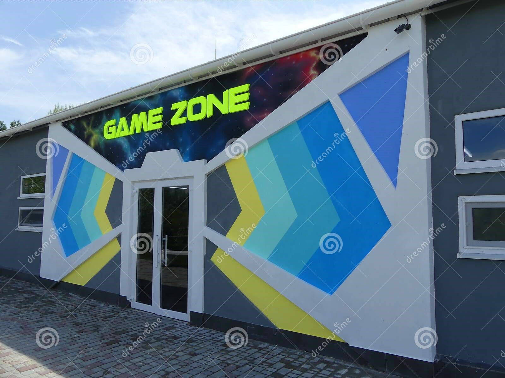

About Us

In a MUD or MMO, zone and area are terms used to refer to one of the parts of the shared virtual environment.
They should not be confused with levels (where a player proceeds through a series of stages in a linear or semi-linear manner).
Areas may vary in the challenge they present to visiting players, but are typically accessible by characters irrespective of
the character's advancement within the game. Where 'levels' are sections of a game, 'areas' are special sections of a virtual
environment in which there may or may not be a game at all.
The environments of MUDs and MMOs may be seamlessly sewn together, in which case it may be difficult or impossible for
the player to know the precise boundaries of a particular area, or they may be connected by connector zones
(such as the classic sight-line blocking z-shaped corridor) or portals. In some games it is possible to note changes
in area through different flora and fauna, altered livery of guards, or special skills.
Many MUDs are hybrids, containing sections which are seamlessly stitched together alongside other areas which are only
accessible via portals, etc. In MUDs, and other games where characters transiting zones is a trivial server task, connector
zones frequently areas in their own right.
Zones are useful for game developers, because they enable the developer to create and modify the game in parts, and online games,
such as MUDs can focus their server resources on areas which are populated.
- Increases A Child's Memory Capacity.
- Computer & Simulation Fluency
- Helps With Fast Strategic Thinking & Problem-Solving.
- Skill-Building
- 24/7 SERVICE SUPPORT available